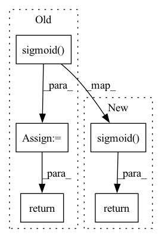

Pattern ID :28805
Before Change
def predict(self, interaction):
user = interaction[self.USER_ID]
item = interaction[self.ITEM_ID]
predict= torch.sigmoid( self.forward(user, item))
return predict
After Change
def predict(self, interaction):
user = interaction[self.USER_ID]
item = interaction[self.ITEM_ID]
return torch.sigmoid( self.forward(user, item))
In pattern: SUPERPATTERN
Frequency: 8
Non-data size: 5
Instances Fragment ID: 84725720
Project Name: rucaibox/recbole
Commit Name: 056ed6868f66f852964c56ec3d7be7d81a05aa25
Time: 2022-07-05
Author: 18301107@bjtu.edu.cn
File Name: recbole/model/general_recommender/nncf.py
M Class Name: NNCF
N Class Name: NNCF
M Method Name: predict(2)
N Method Name: predict(2)
M Parent Class: GeneralRecommender
N Parent Class: GeneralRecommender
M File Name: recbole/model/general_recommender/nncf.py
N File Name: recbole/model/general_recommender/nncf.py
M Start Line: 362
M End Line: 363
N Start Line: 362
N End Line: 362
Before Change
emb_x = self.bn(self.fm(x))
y = self.predict_layer(self.mlp_layers(emb_x)) + self.first_order_linear(interaction)
y = self.sigmoid( y)
return y.squeeze()
def calculate_loss(self, interaction):
label = interaction[self.LABEL]After Change
nfm_all_embeddings = torch.cat(all_embeddings, dim=1) // [batch_size, num_field, embed_dim]
bn_nfm_all_embeddings = self.bn(self.fm(nfm_all_embeddings))
output = self.sigmoid( self.predict_layer(self.mlp_layers(bn_nfm_all_embeddings)) + self.first_order_linear(interaction))
return output.squeeze()
def calculate_loss(self, interaction):
label = interaction[self.LABEL] Fragment ID: 84725721
Project Name: rucaibox/recbole
Commit Name: 1cd5b8571318798b65b36913bafb99f5b3596a99
Time: 2020-09-15
Author: 1207798894@qq.com
File Name: recbox/model/context_aware_recommender/nfm.py
M Class Name: NFM
N Class Name: NFM
M Method Name: forward(2)
N Method Name: forward(2)
M Parent Class: ContextRecommender
N Parent Class: ContextRecommender
M File Name: recbox/model/context_aware_recommender/nfm.py
N File Name: recbox/model/context_aware_recommender/nfm.py
M Start Line: 56
M End Line: 61
N Start Line: 56
N End Line: 60
Before Change
k = torch.square(torch.relu(k))
kv = self.value(k)
rkv = torch.sigmoid( self.receptance(xr)) * kv
return rkv
// k = self.key(xk)
// // if self.my_testing in [0, 2]:After Change
k = self.key(xk)
k = torch.square(torch.relu(k))
kv = self.value(k)
return torch.sigmoid( self.receptance(xr)) * kv
////////////////////////////////////////////////////////////////////////////////////////////////////////////////////////////////////////////////////////////////////////////////////////////////////////////////
// The RWKV Model with our blocks Fragment ID: 84725722
Project Name: blinkdl/rwkv-lm
Commit Name: 038f06b99627049729e332bc66159e0a0092cdaa
Time: 2023-02-02
Author: a@a.com
File Name: RWKV-v4neo/src/model.py
M Class Name: RWKV_ChannelMix
N Class Name: RWKV_ChannelMix
M Method Name: forward(2)
N Method Name: forward(2)
M Parent Class: MyModule
N Parent Class: MyModule
M File Name: RWKV-v4neo/src/model.py
N File Name: RWKV-v4neo/src/model.py
M Start Line: 212
M End Line: 215
N Start Line: 252
N End Line: 253
Before Change
// bw = exp(tw) * cw * stride
// bh = exp(th) * ch * stride
reg_logits = torch.sigmoid( reg_logits)
pred_xy = reg_logits[:, :, :, :, :2] + prior_boxes[:, :, :, :, :2]
pred_w = torch.exp(reg_logits[:, :, :, :, 2]) * self._anchors[:,0].reshape(1,-1,1,1)
pred_h = torch.exp(reg_logits[:, :, :, :, 3]) * self._anchors[:,1].reshape(1,-1,1,1)
pred_boxes = torch.cat([pred_xy, pred_w.unsqueeze(-1), pred_h.unsqueeze(-1)], dim=-1) * self._stride
pred_boxes = cxcywh2xyxy(
pred_boxes.reshape(-1,4)).reshape(
batch_size, num_anchors, grid_y, grid_x, 4)
return pred_boxes
@staticmethod
def generate_grids(grid_y: int, grid_x: int,After Change
// bw = exp(tw) * w
// bh = exp(th) * h
pred_xy = torch.sigmoid( reg_logits[:, :, :, :, :2]) + prior_boxes[:, :, :, :, :2]
pred_w = torch.exp(reg_logits[:, :, :, :, 2]) * self.anchor_sizes[:, 0].reshape(1, self.num_anchors, 1, 1)
pred_h = torch.exp(reg_logits[:, :, :, :, 3]) * self.anchor_sizes[:, 1].reshape(1, self.num_anchors, 1, 1)
pred_boxes = torch.cat([pred_xy, pred_w.unsqueeze(4), pred_h.unsqueeze(4)], dim=4) * self.stride
return cxcywh2xyxy(
pred_boxes.reshape(batch_size*num_anchors*grid_y*grid_x, 4)).reshape(
batch_size, num_anchors, grid_y, grid_x, 4)
Fragment ID: 84725716
Project Name: borhanmorphy/fastface
Commit Name: 90145f768cd9599edb0618b3faf3a69310ff82f8
Time: 2021-03-12
Author: borhano.f.42@gmail.com
File Name: fastface/arch/yolov4/anchor.py
M Class Name: Anchor
N Class Name: Anchor
M Method Name: logits_to_boxes(2)
N Method Name: logits_to_boxes(2)
M Parent Class: nn.Module
N Parent Class:
M File Name: fastface/arch/yolov4/anchor.py
N File Name: fastface/arch/yolov4/anchor.py
M Start Line: 80
M End Line: 111
N Start Line: 45
N End Line: 72
Before Change
L_R_product = torch.matmul(LHS, RHS) // (b,N,T)(b,T,N) -> (B, N, N)
S = torch.matmul(self.Vs, torch.sigmoid( L_R_product + self.bs) ) // (N,N)(B, N, N)->(B,N,N)
S_normalized = F.softmax(S, dim=1)
return S_normalized
After Change
LHS = torch.matmul(torch.matmul(X, self._W1), self._W2)
RHS = torch.matmul(self._W3, X).transpose(-1, -2)
S = torch.matmul(self._Vs, torch.sigmoid( torch.matmul(LHS, RHS) + self._bs) )
S = F.softmax(S, dim=1)
return S
Fragment ID: 84725717
Project Name: benedekrozemberczki/pytorch_geometric_temporal
Commit Name: 7e4b02dc01934e7d78bde3b5a4ccfed5fdcc5fa2
Time: 2021-03-23
Author: benedek.rozemberczki@gmail.com
File Name: torch_geometric_temporal/nn/convolutional/astgcn.py
M Class Name: SpatialAttention
N Class Name: SpatialAttention
M Method Name: forward(2)
N Method Name: forward(2)
M Parent Class: nn.Module
N Parent Class: nn.Module
M File Name: torch_geometric_temporal/nn/convolutional/astgcn.py
N File Name: torch_geometric_temporal/nn/convolutional/astgcn.py
M Start Line: 190
M End Line: 212
N Start Line: 195
N End Line: 210
Before Change
def _pass_through_reset_gate(self, messages: Any, node: Node, edge: Edge, graph: Graph) -> Any:
edge_slice = edge.get_edge_slice()
message_from_a_neighbor_other_than_target = messages[edge_slice]
reset_gate_output = to.sigmoid(
self.w_gru_update_gate_features[edge_slice].matmul(graph.node_features[node.node_id]) +
self.u_gru_update_gate[edge_slice].matmul(message_from_a_neighbor_other_than_target) +
self.b_gru_update_gate)
return reset_gate_output
@staticmethod
def _create_node(graph: Graph, node_id: int) -> Node:After Change
def _pass_through_reset_gate(self, messages: Any, node: Node, edge: Edge, node_features: Any) -> Any:
edge_slice = edge.get_edge_slice()
message_from_a_neighbor_other_than_target = messages[edge_slice]
return to.sigmoid(
to.add(
to.add(self.w_gru_update_gate_features[edge_slice].matmul(node_features[node.node_id]),
self.u_gru_update_gate[edge_slice].matmul(message_from_a_neighbor_other_than_target)),
self.b_gru_update_gate)) .long()
@staticmethod
def _create_node(node_features: Any, adjacency_matrix: Any, node_id: int) -> Node: Fragment ID: 84725718
Project Name: kovanostra/message-passing-neural-network
Commit Name: 5dad6fe6189f37de8425109fa1d3f55dd5960f46
Time: 2020-04-22
Author: kovanostra@gmail.com
File Name: src/domain/graph_encoder.py
M Class Name: GraphEncoder
N Class Name: GraphEncoder
M Method Name: _pass_through_reset_gate(5)
N Method Name: _pass_through_reset_gate(5)
M Parent Class: nn.Module
N Parent Class: nn.Module
M File Name: src/domain/graph_encoder.py
N File Name: src/domain/graph_encoder.py
M Start Line: 142
M End Line: 147
N Start Line: 168
N End Line: 173
Before Change
class SwishImplementation(torch.autograd.Function):
@staticmethod
def forward(ctx, i):
result = i * torch.sigmoid( i)
ctx.save_for_backward(i)
return result
@staticmethod
def backward(ctx, grad_output):After Change
@staticmethod
def forward(ctx, i):
ctx.save_for_backward(i)
return i * torch.sigmoid( i)
@staticmethod
def backward(ctx, grad_output):
sigmoid_i = torch.sigmoid(ctx.saved_variables[0]) Fragment ID: 84725714
Project Name: nightsnack/yolobile
Commit Name: b269ed7b2975ee4f646819a78bf8c20771089e29
Time: 2019-11-25
Author: glenn.jocher@ultralytics.com
File Name: models.py
M Class Name: SwishImplementation
N Class Name: SwishImplementation
M Method Name: forward(2)
N Method Name: forward(2)
M Parent Class: torch.autograd.Function
N Parent Class: torch.autograd.Function
M File Name: models.py
N File Name: models.py
M Start Line: 120
M End Line: 122
N Start Line: 121
N End Line: 121
Before Change
x = self.activation(self.conv3(x))
x = self.activation(self.conv4(x))
out = torch.sigmoid( self.conv_out(x))
out = out.view(-1,1)
return out
=============After Change
x = self.activation(self.conv4(x))
out_logits = self.conv_out(x).view(-1,1)
out = torch.sigmoid( out_logits)
return out, out_logits
============= Fragment ID: 84725715
Project Name: justin-tan/high-fidelity-generative-compression
Commit Name: 7eb85d5192a8e62be2571304ab85c3b14a6a245a
Time: 2020-08-05
Author: justan@student.unimelb.edu.au
File Name: hific/models/network.py
M Class Name: Discriminator
N Class Name: Discriminator
M Method Name: forward(3)
N Method Name: forward(3)
M Parent Class: nn.Module
N Parent Class: nn.Module
M File Name: hific/models/network.py
N File Name: hific/models/network.py
M Start Line: 341
M End Line: 346
N Start Line: 343
N End Line: 348